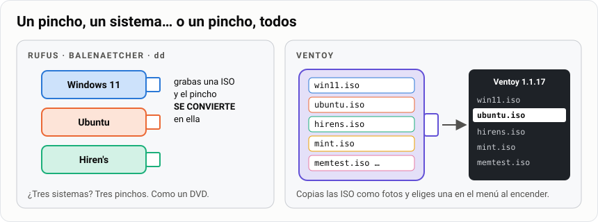
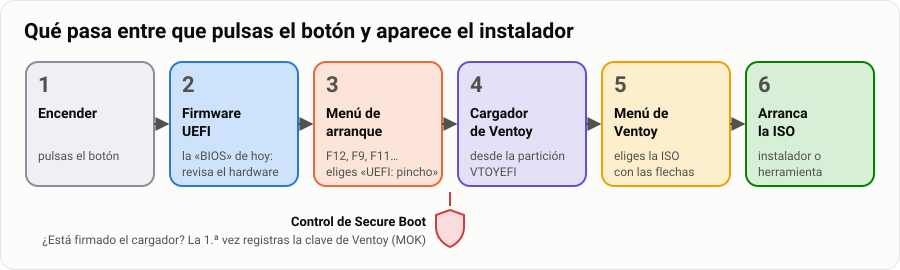
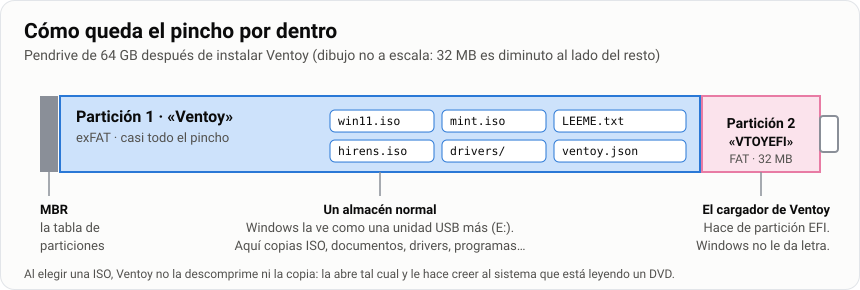
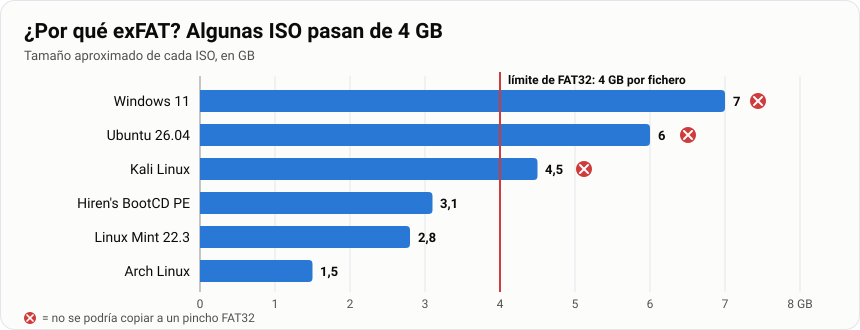
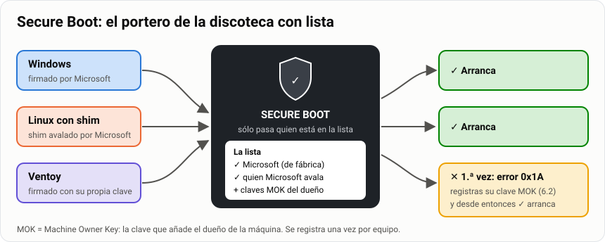
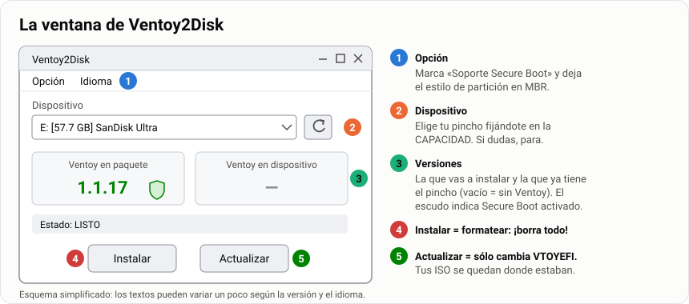
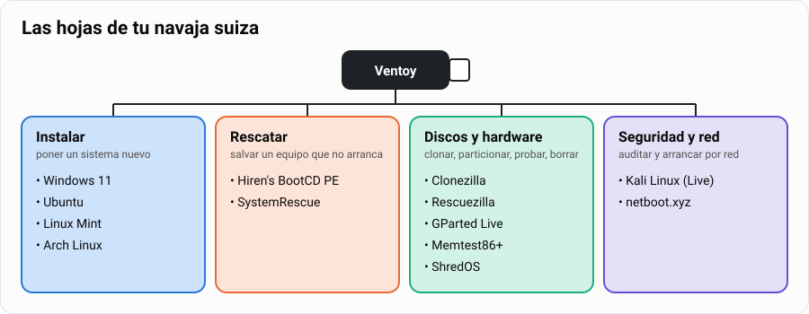
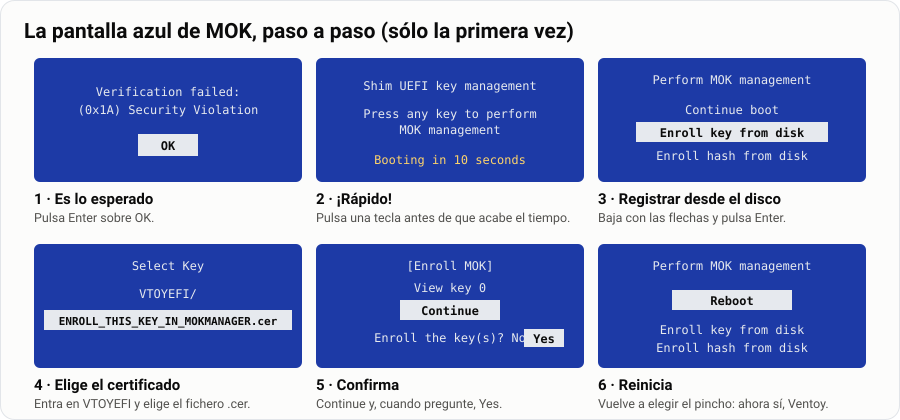

Antes de empezar. Es el paso previo a instalar Arch Linux: ahí arrancarás desde una ISO, y aquí aprendes qué pasa entre que pulsas el botón de encendido y aparece el instalador.
Imagina que llega a tu mesa un portátil que no arranca. Otro va lentísimo. A un tercero hay que instalarle Linux. Un técnico no lleva una caja llena de pinchos: lleva uno solo que lo arranca todo. Al terminar esta guía tendrás el tuyo.
| 🎯 Qué vas a conseguir | Un pendrive que arranca una docena de sistemas y herramientas, elegidos desde un menú |
| 🧰 Qué necesitas | Un pendrive de 64 GB, un PC con Windows y permisos de administrador (apartado 0) |
| ⏱️ Tiempo | 5 horas: 2 sesiones en el aula + las descargas |
| 📦 Qué entregas | La tarea «Mi navaja suiza USB» y una defensa en el aula (Parte 4) |
Tu misión, paso a paso:
Analogía. Con las herramientas clásicas (Rufus, balenaEtcher,
dd), un pincho es como un DVD: grabas una ISO y el pincho se convierte en ella. Para tener cinco sistemas necesitas cinco pinchos.Ventoy convierte el pincho en una estantería con conserje. Tú copias los ficheros
.isoen la estantería como copiarías fotos, y al encender el equipo el conserje (el cargador de arranque de Ventoy) te enseña la lista y arranca el que elijas. ¿Nueva versión de Ubuntu? Borras la ISO vieja y copias la nueva. No se reinstala nada.

Por el camino vas a tocar con las manos lo que en la teoría del arranque son sólo palabras: UEFI y BIOS, tabla de particiones, partición EFI, sistemas de archivos y Secure Boot.
| Qué | Detalle |
|---|---|
| 💾 Pendrive | 64 GB recomendado (32 GB vale con la lista reducida del apartado 4.2). Mejor USB 3: con USB 2 arrancar Windows tarda una eternidad |
| 🪟 Equipo Windows | Con permisos de administrador: Ventoy tiene que escribir en el disco a bajo nivel |
| 📥 Descargas | Unos 30 GB de ISO. Si el profesor las ha dejado en la carpeta compartida del aula, cópialas de ahí |
| 🖥️ Un equipo donde probar | Uno del aula que te indique el profesor, con permiso para abrir su menú de arranque |
[!WARNING] Instalar Ventoy borra el pendrive entero. Copia antes lo que tengas en él. Y comprueba tres veces qué disco eliges: Ventoy te enseña los discos USB, pero si hay un disco externo conectado también aparecerá. Desconéctalo antes de empezar.
Antes de tocar nada, mira el camino completo que recorre el equipo cuando arranca desde tu pincho. Cada caja es un apartado de esta guía:

Cuando instalas Ventoy, el pincho queda así:

VTOYEFI) es la que busca el firmware al arrancar. En un equipo UEFI hace
de partición EFI (la misma idea que la partición de 512 MB de tu MV de Mint); en un equipo
antiguo con BIOS, el arranque empieza en el MBR del pincho y salta a ella.Ventoy) es un almacén normal. Windows la ve como una unidad USB cualquiera
y puedes guardar en ella también documentos, drivers o instaladores de programas.[!NOTE] Cuando eliges una ISO en el menú, Ventoy no la descomprime ni la copia: la abre directamente y le hace creer al sistema que arranca que está leyendo un DVD. Por eso basta con copiar el fichero.
FAT32 no admite ficheros de 4 GB o más. Y mira cuánto ocupan algunas ISO:

En FAT32 ni siquiera se podrían copiar. exFAT no tiene ese límite y lo leen Windows, macOS y Linux.
[!TIP] Para comparar. Herramientas como Rufus en modo FAT32 tienen que partir el fichero
install.wimde Windows para que quepa. Con Ventoy ese problema no existe: la ISO viaja entera.
Secure Boot es una función de UEFI que sólo deja arrancar programas firmados con una clave en la que el firmware confía. Los fabricantes traen de serie las claves de Microsoft, y Microsoft firma también un pequeño programa llamado shim que usan casi todas las distribuciones Linux para arrancar con Secure Boot activo.

Analogía. Secure Boot es el portero de una discoteca con lista. La lista de fábrica sólo tiene a Microsoft y a quien Microsoft avala. Ventoy no está en la lista, así que la primera vez tienes que apuntarlo tú: eso es la pantalla azul de MOK del apartado 6.2. MOK significa Machine Owner Key: la clave que añade el dueño de la máquina.
[!IMPORTANT] Lo que tienes que saber en 2026. Los certificados de Microsoft de 2011 que firmaban esos shim caducaron en junio de 2026 y se están sustituyendo por los de 2023. Por eso Ventoy 1.1.14 cambió su clave. En la práctica:
- Usa Ventoy 1.1.14 o posterior (en esta guía, la 1.1.17).
- Un pincho con un Ventoy antiguo hay que actualizarlo, y el equipo te pedirá registrar la clave nueva aunque ya tuviera la vieja.
[!CAUTION] La otra cara. Una vez registrada su clave, Ventoy por defecto se salta Secure Boot para las ISO que arranca: por eso arrancan también las que no están firmadas (Arch, Memtest86+…). Es cómodo, pero es un agujero: en un equipo con la clave de Ventoy registrada, cualquiera con un pincho Ventoy arranca lo que quiera. Lo comentaremos en clase.
🧠 ¿Lo has pillado?
Ventoy (exFAT). El firmware busca la pequeña,
VTOYEFI, que hace de partición EFI.ventoy-1.1.17-windows.zip (o la versión más reciente que aparezca).[!TIP] Buena costumbre profesional. Comprueba la huella SHA-256 del zip con la que publica la página de descarga, igual que hiciste con la ISO de Mint:
Algunos antivirus marcan Ventoy como sospechoso porque escribe en el disco a bajo nivel, que es justo lo que hace el malware. Por eso importa descargarlo sólo de la web oficial o de su GitHub y verificar la huella.
Abre Ventoy2Disk.exe y acepta el aviso de administrador. Si sale en inglés: menú
Language → Español.

Antes de pulsar nada, revisa el menú Opción (zona 1):
| Opción | Qué elegir | Por qué |
|---|---|---|
| Soporte Secure Boot (Secure Boot Support) | ✅ Marcada | Sin ella, en los equipos con Secure Boot activo tendrías que entrar en la BIOS a desactivarlo |
| Estilo de partición (Partition Style) | MBR (el predeterminado) | Un pincho MBR arranca en UEFI y en BIOS; algunos equipos viejos no arrancan pinchos GPT |
| Configuración de partición (Partition Configuration) | Sin espacio reservado | Sirve para dejar hueco al final del pincho para otra partición. No lo necesitas |
[!IMPORTANT] «¿MBR? ¡Pero si en el curso todo es GPT!» No hay contradicción: la tabla de particiones es una propiedad de cada disco, no del ordenador. Tu portátil puede tener el disco interno en GPT y arrancar sin problema desde un pincho MBR. Es una buena pregunta de examen.
[!WARNING] Instalar ≠ Actualizar. Instalar formatea el pincho y borra las ISO. Actualizar sólo cambia la partición
VTOYEFIy no toca tus ficheros. Cuando salga una versión nueva de Ventoy, el botón que quieres es Actualizar.
No te fíes: mira. En Windows, clic derecho en Inicio → Administración de discos, o en PowerShell como administrador:
Get-Disk | Where-Object BusType -eq 'USB'
Get-Partition -DiskNumber N # N = el número de disco del pincho
Get-Volume | Where-Object FileSystemLabel -in 'Ventoy','VTOYEFI'
Tienes que ver dos particiones: una grande exFAT llamada Ventoy y una de 32 MB llamada
VTOYEFI. El Explorador de Windows sólo te enseña la primera; la segunda no tiene letra, igual
que la partición EFI de tu disco interno.
[!TIP] Si conectas el pincho a tu MV de Mint (menú Dispositivos → USB de VirtualBox), también lo puedes ver con la herramienta que ya conoces:
Estas son las «hojas» de tu navaja, agrupadas por lo que resuelven:

Versiones vigentes en septiembre de 2026.
[!WARNING] Descarga siempre desde la web oficial. Una ISO de una web de descargas cualquiera puede venir modificada, y es un sistema que vas a arrancar con todos los permisos sobre el equipo.
🔵 Instalar sistemas
| ISO | Para qué | Fichero (versión actual) | Tamaño | Web oficial |
|---|---|---|---|---|
| Windows 11 | Instalar o reinstalar Windows | ISO multiedición x64, versión 25H2 | ~7 GB | https://www.microsoft.com/es-es/software-download/windows11 → Descargar imagen de disco (ISO) |
| Ubuntu | Instalar Ubuntu o probar si el hardware funciona con Linux | ubuntu-26.04.1-desktop-amd64.iso |
6,0 GB | https://ubuntu.com/download/desktop |
| Linux Mint | La distribución del curso; ideal para revivir equipos viejos | linuxmint-22.3-xfce-64bit.iso |
2,8 GB | https://linuxmint.com/download.php |
| Arch Linux | La instalación de Arch | archlinux-2026.09.01-x86_64.iso (sale una nueva cada mes) |
1,5 GB | https://archlinux.org/download/ |
🟠 Rescatar y reparar
| ISO | Para qué | Fichero (versión actual) | Tamaño | Web oficial |
|---|---|---|---|---|
| Hiren's BootCD PE | Un Windows 11 que arranca desde el pincho con decenas de utilidades: explorador, antivirus, recuperación de ficheros, diagnóstico de discos, edición del registro | HBCD_PE_x64.iso (v1.0.8) |
~3,1 GB | https://www.hirensbootcd.org/download/ |
| SystemRescue | El equivalente en Linux: reparar GRUB, montar discos, chroot, fsck, testdisk |
systemrescue-13.02-amd64.iso |
~1,3 GB | https://www.system-rescue.org/Download/ |
🟢 Clonar, particionar, diagnosticar, borrar
| ISO | Para qué | Fichero (versión actual) | Tamaño | Web oficial |
|---|---|---|---|---|
| Clonezilla | Clonar un disco entero o guardar una imagen del sistema. En modo texto, muy fiable | clonezilla-live-3.3.3-37-amd64.iso |
~0,5 GB | https://clonezilla.org/downloads.php |
| Rescuezilla | Lo mismo que Clonezilla pero con ventanas; compatible con sus imágenes | rescuezilla-2.6.2-64bit.resolute.iso |
~1,3 GB | https://rescuezilla.com/download |
| GParted Live | Crear, mover y redimensionar particiones de forma gráfica | gparted-live-1.8.1-6-amd64.iso |
~0,6 GB | https://gparted.org/download.php |
| Memtest86+ | Probar la memoria RAM durante horas | mt86plus_8.10_x86_64.iso (viene en un .zip: descomprímelo) |
< 50 MB | https://www.memtest.org/ |
| ShredOS | Borrar un disco de forma segura con nwipe antes de vender o reciclar el equipo |
la .iso de x86-64 más reciente |
< 200 MB | https://github.com/PartialVolume/shredos.x86_64/releases |
🟣 Seguridad y red
| ISO | Para qué | Fichero (versión actual) | Tamaño | Web oficial |
|---|---|---|---|---|
| Kali Linux (Live) | Auditoría de seguridad. La usarás en el ciclo; aquí, para conocerla | la ISO Live más reciente (2026.x) | ~4,5 GB | https://www.kali.org/get-kali/ → Live Boot |
| netboot.xyz | Una ISO diminuta que descarga por red el instalador de decenas de sistemas | netboot.xyz.iso |
< 5 MB | https://netboot.xyz/downloads/ |
[!CAUTION] Kali y las herramientas de contraseñas no son juguetes. Kali trae herramientas de ataque y Hiren's trae utilidades para quitar la contraseña de una cuenta local de Windows. Úsalas sólo en equipos tuyos o en los que te hayan autorizado por escrito. Entrar en un sistema ajeno sin permiso es delito en España (artículo 197 bis del Código Penal), aunque «sólo estuvieras mirando». En el aula: sólo en tus máquinas virtuales.
[!NOTE] ¿Y Windows 10? Perdió el soporte gratuito en octubre de 2025. Si te lo piden para un equipo concreto, añádelo, pero no forma parte de la navaja estándar.
| Conjunto | Tamaño aproximado | Pincho |
|---|---|---|
| Todo lo del apartado 4.1 | ~29 GB | 64 GB (un pincho «de 32 GB» tiene unos 29,8 GB útiles: no cabe con margen) |
| Lista reducida: Windows 11, Mint, Hiren's, SystemRescue, Clonezilla, GParted, Memtest86+ | ~15 GB | 32 GB |
¿Por qué un pincho de 32 GB no tiene 32 GB? Porque el fabricante y Windows cuentan distinto:
| Quién | Cómo cuenta | 1 «giga» son… |
|---|---|---|
| El fabricante | GB decimales | 1 000 000 000 bytes |
| Windows | GiB binarios (aunque ponga «GB») | 1 073 741 824 bytes |
32 000 000 000 ÷ 1 073 741 824 ≈ 29,8. No te han timado: es la misma cantidad de bytes contada con otra unidad. Es lo mismo que pasaba con tu disco de 25 GB, que salía como 26 843 MB en el instalador de Mint, pero al revés.
Cada web oficial publica la huella SHA-256 de sus ISO (un fichero SHA256SUMS, sha256sum.txt o
la propia cifra junto al botón de descarga). Compruébala antes de copiar la ISO al pincho:
Get-FileHash .\archlinux-2026.09.01-x86_64.iso -Algorithm SHA256
Para verificar todas las ISO de una carpeta de una vez y copiar el resultado al entregable:
Get-ChildItem *.iso | Get-FileHash -Algorithm SHA256 | Format-Table Hash, Path -AutoSize
[!IMPORTANT] Por qué importa aquí más que nunca. Un programa normal se ejecuta dentro de Windows, con sus permisos y su antivirus vigilando. Una ISO de arranque se ejecuta antes que Windows, con acceso total a todos los discos. Es la puerta de atrás perfecta, y la huella es la única manera de saber que el fichero es el que publicó el autor.
Analogía. La huella SHA-256 es como el precinto de un bote de comida: si el número que calculas no coincide con el de la web, alguien ha abierto el bote (o la descarga se ha roto). Basta con que cambie un solo bit para que la huella sea completamente distinta.
Ventoy busca ISO en todo el pincho, también dentro de carpetas. Aprovéchalo para que el menú tenga orden:
Ventoy (E:)
├── ISO/
│ ├── 1-instalar/
│ │ ├── Win11_25H2_Spanish_x64.iso
│ │ ├── ubuntu-26.04.1-desktop-amd64.iso
│ │ ├── linuxmint-22.3-xfce-64bit.iso
│ │ └── archlinux-2026.09.01-x86_64.iso
│ ├── 2-rescate/
│ │ ├── HBCD_PE_x64.iso
│ │ └── systemrescue-13.02-amd64.iso
│ ├── 3-discos/
│ │ ├── clonezilla-live-3.3.3-37-amd64.iso
│ │ ├── rescuezilla-2.6.2-64bit.resolute.iso
│ │ ├── gparted-live-1.8.1-6-amd64.iso
│ │ ├── mt86plus_8.10_x86_64.iso
│ │ └── shredos-...-x86-64.iso
│ └── 4-seguridad-y-red/
│ ├── kali-linux-2026.x-live-amd64.iso
│ └── netboot.xyz.iso
├── ventoy/
│ └── ventoy.json ← configuración (apartado 5.2)
└── LEEME.txt ← qué hay, qué versión y cuándo lo actualizaste
Normas:
[!WARNING] Espera a que termine la copia y usa «Expulsar» antes de sacar el pincho. Con ficheros de varios GB, sacarlo a lo bruto deja ISO a medias que luego «no arrancan sin motivo».
Ventoy funciona sin configurar nada. Pero con un fichero /ventoy/ventoy.json puedes cambiar su
comportamiento con plugins. Hay dos formas de escribirlo:
| Forma | Cómo | Ojo con |
|---|---|---|
| ✍️ A mano | En VS Code | Es JSON puro: cuidado con las comas y sin comentarios (JSON no los admite) |
| 🖱️ Con VentoyPlugson.exe | Viene en la misma carpeta que Ventoy2Disk. Abre un formulario en el navegador y escribe el fichero por ti | Guarda una copia ventoy_backup.json |
Un ejemplo razonable para empezar:
{
"control": [
{ "VTOY_DEFAULT_MENU_MODE": "1" }
],
"menu_alias": [
{ "image": "/ISO/1-instalar/linuxmint-22.3-xfce-64bit.iso",
"alias": "Linux Mint 22.3 Xfce (la del curso)" },
{ "image": "/ISO/2-rescate/HBCD_PE_x64.iso",
"alias": "Hiren's BootCD PE (rescate Windows)" },
{ "image": "/ISO/3-discos/mt86plus_8.10_x86_64.iso",
"alias": "Memtest86+ (probar la RAM)" }
]
}
| Clave | Qué hace |
|---|---|
VTOY_DEFAULT_MENU_MODE |
1 abre el menú en vista de árbol, con las carpetas del apartado anterior. 0 es la lista plana. También se cambia al vuelo con F3 |
menu_alias |
Sustituye el nombre del fichero por un texto descriptivo en el menú. La ruta empieza en la raíz del pincho, con barras / aunque estés en Windows |
[!TIP] ¿Te da error el JSON? Ábrelo en VS Code: las comas que faltan o sobran salen subrayadas en rojo. Un error típico es dejar una coma después del último elemento de una lista.
[!NOTE] Lo que Ventoy ya hace por ti con Windows 11. Por defecto tiene activada la opción
VTOY_WIN11_BYPASS_CHECK, que salta las comprobaciones de TPM, Secure Boot, RAM y procesador del instalador de Windows 11. Útil en el aula con equipos antiguos; recuerda que un Windows 11 instalado así en hardware no compatible no tiene garantizadas las actualizaciones.
Ampliación. Un Linux live arrancado desde el pincho lo olvida todo al apagar. Con persistencia, los cambios (programas instalados, ficheros, ajustes) se guardan en un fichero
.datdentro del pincho. Es como darle al sistema live una mochila.
Crea el fichero de persistencia desde tu MV de Mint, con el paquete de Linux de Ventoy
(ventoy-1.1.17-linux.tar.gz), y déjalo en la carpeta compartida con Windows:
tar xf ventoy-1.1.17-linux.tar.gz
cd ventoy-1.1.17
sudo ./CreatePersistentImg.sh -s 4096 -l casper-rw -o mint-persistencia.dat
-s es el tamaño en MB y -l la etiqueta, que depende de la distribución: casper-rw
para Ubuntu y Mint, persistence para Kali, vtoycow para Arch.
Copia mint-persistencia.dat al pincho, en una carpeta /persistence/.
Añade al ventoy.json, al mismo nivel que menu_alias:
"persistence": [
{ "image": "/ISO/1-instalar/linuxmint-22.3-xfce-64bit.iso",
"backend": "/persistence/mint-persistencia.dat" }
]
Al arrancar Mint, Ventoy preguntará si quieres usar la persistencia o arrancar limpio.
No hace falta cambiar el orden de arranque en la BIOS. Casi todos los equipos tienen un menú de arranque de un solo uso al que se entra pulsando una tecla nada más encender:
| Fabricante | Tecla habitual |
|---|---|
| Dell, Lenovo, Acer, Gigabyte, Toshiba | F12 (en Acer hay que activarlo antes en la BIOS) |
| HP | F9 (o Esc y luego F9) |
| ASUS | F8 en sobremesa, Esc en portátil |
| MSI, ASRock | F11 |
[!TIP] Pulsa la tecla repetidamente desde que enciendes, como quien llama a un ascensor con prisa.
[!WARNING] Si Windows arranca igualmente, no lo has apagado de verdad: el apagado normal de Windows 10/11 es en realidad una hibernación y se salta el firmware. Apágalo con Mayús + Apagar o, desde Windows, Configuración → Sistema → Recuperación → Inicio avanzado → Usar un dispositivo.
En el menú puede aparecer el pincho dos veces: una con UEFI: delante y otra sin ella. Elige
la de UEFI, que es el modo en que trabajamos todo el curso.
Si el equipo tiene Secure Boot activo, la primera vez no aparece Ventoy sino una pantalla azul en inglés, sin ratón. Es el portero preguntando por el nuevo de la lista. Se maneja con las flechas y Enter:

Verification failed: (0x1A) Security Violation. Es lo esperado. Pulsa
OK.VTOYEFI y dentro el fichero ENROLL_THIS_KEY_IN_MOKMANAGER.cer.[!NOTE] Esto se hace una vez por equipo. Si en lugar de la pantalla azul aparece un error y el equipo no deja registrar claves, la salida es desactivar Secure Boot en la BIOS para la práctica (y volver a activarlo al terminar).
Verás la lista de ISO (o el árbol de carpetas). Se maneja con el teclado:
| Tecla | Qué hace |
|---|---|
Enter |
Abre el submenú de la ISO; elige Boot in normal mode |
F3 |
Cambia entre vista de lista y de árbol |
F5 |
Herramientas: comprobar la ISO, ajustes temporales (por ejemplo, desactivar el salto de comprobaciones de Windows 11 para un arranque) |
F6 |
Menú personalizado, si lo has creado |
Esc |
Volver atrás |
En el submenú de cada ISO hay otros modos para cuando el normal falla:
| Modo | Atajo | Cuándo |
|---|---|---|
| GRUB2 | Ctrl + R |
Algunas distribuciones Linux que no arrancan en modo normal |
| WIMBOOT | Ctrl + W |
Imágenes de Windows |
| MEMDISK | Ctrl + D |
Carga la ISO entera en RAM; para imágenes pequeñas como Memtest86+ en equipos BIOS |
🎯 Prueba mínima de la práctica: arranca tres ISO y llega hasta su pantalla principal, sin instalar nada:
[!CAUTION] En un equipo real no pulses «Instalar» en ningún instalador ni «Start» en ShredOS o Clonezilla: borrarías el disco del equipo del aula. Las instalaciones de verdad se hacen en máquinas virtuales.
Tener las ISO no te hace técnico: lo que te hace técnico es saber qué hoja de la navaja abrir.
| Situación | Herramienta | Qué harías |
|---|---|---|
| Windows no arranca y hay que salvar las fotos del usuario | Hiren's | Arrancar, abrir el explorador, copiar la carpeta del usuario a un disco externo |
| El portátil va lentísimo y quieres pasar el sistema a un SSD nuevo | Clonezilla o Rescuezilla | Clonar disco a disco (device-device) |
| Pantallazos azules al azar, sin patrón | Memtest86+ | Dejarlo varias pasadas; un solo error ya significa RAM defectuosa |
| Quieres instalar Linux junto a Windows y no hay espacio libre | GParted Live | Reducir la partición de Windows (desfragmentada y sin hibernar antes) |
| Tras instalar Windows, desaparece el GRUB de Arch | SystemRescue o Arch live | Montar las particiones, arch-chroot y reinstalar GRUB |
| Vas a donar un equipo con disco mecánico | ShredOS | nwipe con una pasada; con discos SSD, mejor el borrado seguro del fabricante (un SSD reparte las escrituras y sobrescribir no garantiza nada) |
| Ordenador de 2012 que ya no mueve Windows | Linux Mint | Probar en live; si va fino, instalar |
| Quieres saber si la wifi de un portátil funciona en Linux antes de instalar | Ubuntu live | Arrancar y probar sin tocar el disco |
| Hay que hacer una copia completa del sistema antes de tocar nada | Clonezilla | Guardar una imagen del disco en un disco externo (device-image) |
[!TIP] Regla del técnico: antes de cualquier operación que pueda borrar algo (particionar, reparar, reinstalar), primero una copia con Clonezilla o Hiren's. Cinco minutos de copia te ahorran un disgusto enorme.
ventoy.json si lo tenía. Nada más.LEEME.txt en la raíz del pincho, con qué hay, qué versión y cuándo lo revisaste. Un
técnico que abre tu pincho dentro de un año tiene que saber de un vistazo si el Windows es el de
2026 o el de 2031.| Lo que pasa | Lo que significa |
|---|---|
| «Windows me dice que formatee el pincho» | Es la partición VTOYEFI, que Windows no entiende del todo. Cancela. Si la formateas, Ventoy deja de arrancar (se arregla con Actualizar) |
| «He copiado una ISO de 7 GB y no ha dado error» | Correcto: es exFAT. Si alguna vez da error de «archivo demasiado grande», alguien ha reformateado la partición a FAT32 |
| «He copiado Memtest86+ y no sale en el menú» | Viene dentro de un .zip. Ventoy no ve los zip: descomprímelo y copia la .iso |
| «Pendrive MBR, pero el curso dice UEFI + GPT» | El pincho y el disco del equipo son discos distintos, cada uno con su tabla. Ver apartado 3.2 |
| «¿Dónde está el botón de grabar?» | No hay: las ISO no se «graban», se copian, como cualquier fichero |
| «Ventoy me ha borrado el disco del equipo» | No: Ventoy sólo arranca el instalador. Lo que pasa después (particionar, formatear) es cosa de cada sistema, y ahí es donde se borran discos |
| Síntoma | Causa habitual | Solución |
|---|---|---|
| El pincho no aparece en el menú de arranque del equipo | Arranque desde USB desactivado en la BIOS, o puerto USB 3 que el firmware no ve | Probar otro puerto (mejor uno trasero en sobremesa); activar USB Boot en la BIOS |
Pantalla azul Verification failed (0x1A) |
Secure Boot activo y clave de Ventoy sin registrar | Registrar la clave (apartado 6.2) |
| Después de actualizar Ventoy vuelve a pedir la clave | Desde la 1.1.14 la clave es distinta | Normal: registrar la nueva una vez |
| Sale un error en lugar de la pantalla de MOK | El firmware no acepta la gestión de claves | Desactivar Secure Boot en la BIOS para la práctica |
| Una ISO concreta se queda en negro o da error al arrancar | Descarga corrupta, o modo de arranque no compatible | Comprobar SHA-256; si está bien, probar el modo GRUB2 (Ctrl + R) o MEMDISK (Ctrl + D) |
| Una ISO no aparece en el menú | Está comprimida (.zip, .7z) o tiene una extensión rara |
Descomprimirla; Ventoy lista .iso, .wim, .img, .vhd(x) y .efi |
| Windows arranca sin enseñar el menú de arranque | Inicio rápido de Windows (hibernación) | Apagar con Mayús + Apagar o usar Inicio avanzado |
| Ventoy2Disk no ve el pincho | Es un disco que Windows identifica como fijo, o falta permiso de administrador | Ejecutar como administrador; Opción → Mostrar todos los dispositivos con muchísimo cuidado |
| El pincho «de 64 GB» se llena con 20 GB o las ISO salen corruptas al copiar | Pendrive falsificado que miente sobre su capacidad | Comprobarlo con H2testw (Windows) o f3 (Linux) y tirarlo |
| Mint live arranca pero la persistencia no guarda nada | Etiqueta del .dat incorrecta |
Recrearlo con -l casper-rw (Kali: persistence) |
La práctica en 8 pasos
ventoy-1.1.17-windows.zip, verificar SHA-256 y descomprimir.Ventoy2Disk.exe → Opción: Secure Boot ✅, estilo MBR.Ventoy y VTOYEFI) en Administración de discos.ventoy/ventoy.json y el LEEME.txt.Teclas
| Dónde | Tecla | Qué hace |
|---|---|---|
| Al encender | F12 / F9 / F11 / F8 / Esc |
Menú de arranque (según fabricante) |
| Menú de Ventoy | Enter → Boot in normal mode |
Arrancar la ISO |
| Menú de Ventoy | F3 |
Lista ↔ árbol |
| Menú de Ventoy | F5 |
Herramientas |
| Submenú de la ISO | Ctrl + R / W / D |
Modo GRUB2 / WIMBOOT / MEMDISK |
| MokManager | flechas + Enter |
Navegar (no hay ratón) |
Comprobaciones en PowerShell (como administrador)
Get-Disk | Where-Object BusType -eq 'USB' # ver el pincho
Get-Partition -DiskNumber N # sus particiones
Get-ChildItem *.iso | Get-FileHash -Algorithm SHA256 | Format-Table Hash, Path -AutoSize
Las tres ideas clave
| Idea | En una frase |
|---|---|
| exFAT | Porque FAT32 no admite ficheros de 4 GB o más |
| MBR en el pincho | La tabla de particiones es de cada disco, no del ordenador |
| MOK | La clave del dueño de la máquina: apunta a Ventoy en la lista de Secure Boot |
Antes de la práctica real, comprueba que lo tienes claro. No cuentan para nota: son para ti.
Calentamiento
F9, o Esc y luego F9), o Windows estaba
hibernado en lugar de apagado: hay que apagar con Mayús + Apagar.Situaciones de práctica (como las que te pondrá el profesor en la entrega): para cada una, ¿qué herramienta sacas y qué pasos das?
grub rescue>.chroot y reinstalar GRUB. Si la partición está borrada del todo, testdisk (incluido en
SystemRescue) puede intentar recuperarla. Antes de tocar nada, imagen del disco con
Clonezilla.nwipe, una pasada por disco, y apuntar el número de serie de cada disco
borrado como justificante.Tarea Moodle: «Mi navaja suiza USB» Calificación de 0 a 10 · Se aprueba con 5.
Entrega un PDF exportado desde Markdown (como en la guía de Markdown) con:
Get-Partition en texto) donde se vean
las dos particiones, y un párrafo que explique para qué sirve cada una.Get-FileHash en texto, no en captura).ventoy.json con al menos VTOY_DEFAULT_MENU_MODE y tres menu_alias.Rúbrica
| Criterio | Puntos |
|---|---|
| Ficha del pincho y explicación de las particiones (1 y 2) | 1,5 |
| Tabla de ISO completa y verificada con SHA-256 (3) | 2 |
ventoy.json válido y funcionando (4) |
1 |
| Prueba de arranque documentada (5) | 2 |
| Respuestas a las cuatro preguntas (6) | 2 |
| Situaciones resueltas con criterio (7) | 1 |
| Incidencias y calidad del documento (8, formato, capturas con pie) | 0,5 |
[!IMPORTANT] Defensa en el aula (sin nota aparte, pero sin ella no se califica la tarea): el profesor te pide una herramienta de la lista y tienes que llegar a su pantalla principal en un equipo del aula en menos de tres minutos, desde el equipo apagado. Practica antes: ¿sabes la tecla del menú de arranque de los equipos del aula?
Antes de entregar, comprueba: